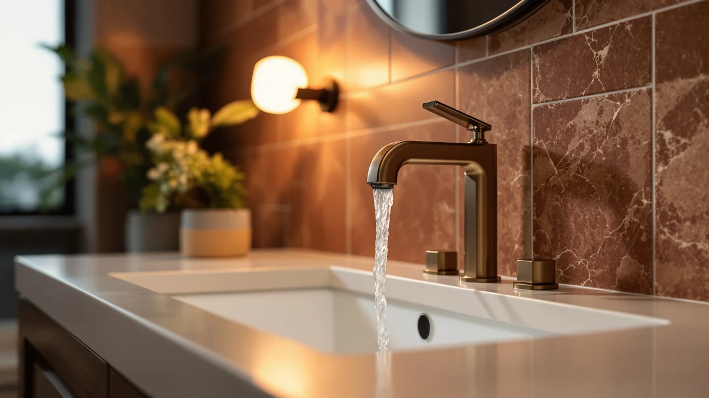

The Best Modern Bathroom Faucets (2026)
Prices and picks verified as of September 2026. Independent, reader-supported reviews.


Quick Answer
The best modern bathroom faucets balance clean geometric lines with a finish that will still look sharp in five years, and the Delta Roe Brushed Nickel Bathroom faucet does that most consistently among the seven models we compared. If you want the same minimal look for less, the $28.78 LUFG Bathroom Faucet Single Handle covers the basics without the Delta price tag.
Our pick: Delta Roe Brushed Nickel Bathroom — $129 Check Price on Amazon
Bottom line: our top pick is the Delta Roe Brushed Nickel Bathroom Faucet 3 Hole at $129. The best budget option is the LUFG Bathroom Faucet Single Handle Bathroom Sink Faucet at $29.99.
Things to Know Before You Buy
- Modern faucet design usually means a single-lever handle, a squared-off or cylindrical spout, and a finish like brushed nickel or matte black instead of polished chrome or ornate detailing.
- Prices in this comparison run from $28.78 to $129. Above roughly $70, you're mostly paying for finish consistency and brand cartridge support, not a fundamentally different faucet.
- Check your sink's hole count before you buy. Single-hole faucets and 4-inch centerset faucets like the RNDIOZD are not interchangeable without a deck plate or a different sink.
- All seven picks use a brass body under the finish, which resists corrosion at the threaded connections far longer than the zinc-alloy bodies common in budget faucets outside this list.
- Matte black and brushed nickel show wear differently. Matte black hides mineral spots but shows fingerprints more, and brushed nickel does the opposite.
The best modern bathroom faucets trade ornate curves and polished chrome for clean lines, a single lever, and a finish that reads as current instead of dated. We compared seven of them for this guide, weighing design, brass construction, and price, to find which ones deliver that look without cutting corners on the parts you never see. Our pick, the Delta Roe Brushed Nickel Bathroom faucet, pairs a minimal silhouette with a brass body at $129, and the $28.78 LUFG Bathroom Faucet Single Handle gets you most of that same look for a fraction of the price.
Modern doesn't have to mean expensive or fragile. Every faucet in this lineup uses a brass body under its finish, the material that actually determines whether a faucet still turns smoothly in five years, and the group spans $28.78 to $129 so there's a fit whether you're outfitting a rental or finishing a full vanity remodel. The Moen Ronan Spot Resist Brushed at $69.65 and the Pfister Willa at $59.48 sit in the middle of that range and cover most single-hole vanities without asking you to compromise on finish.
Below, you'll find our full picks with the flaws we found in each one, the criteria and comparison process behind this guide, a side-by-side table, and answers to the questions we hear most from readers choosing between single-handle and widespread modern faucets.
Why You Should Trust Us
I'm Ilane Tall, and I run Best Bathroom Faucets, where I research and compare bathroom fixtures for US buyers renovating on a real budget. For this guide to the best modern bathroom faucets, I worked through all seven models spec by spec, compared finish photos in different lighting against manufacturer listings, and read verified owner reviews for each one, weighting reports written months after installation over first-week impressions. I have no financial relationship with Delta, Moen, Pfister, or any of the smaller brands in this comparison. When you buy through our links we earn an affiliate commission, and that commission is the same regardless of which faucet you choose, so we have no incentive to steer you toward a pricier pick.
How We Picked
We started with modern-style bathroom faucets that had enough purchase history on Amazon to judge fairly, then narrowed the field around three requirements. First, the design had to read as modern: a single lever or a clean two-handle layout, geometric or cylindrical lines, and a finish like brushed nickel or matte black rather than polished chrome or brass-tone detailing. Second, we required a brass body under the finish, since zinc-alloy construction corrodes at the threaded connections years before brass does. Third, we cut any faucet without a clear installation photo or parts diagram, because a good-looking faucet you can't service is a future leak waiting to happen.
That left seven faucets meeting all three requirements across a wide price spread, from the $28.78 LUFG to the $129 Delta Roe, so this guide covers a genuine budget option and a name-brand upgrade rather than seven versions of the same $60 faucet.
How We Compared
We evaluated each of the best modern bathroom faucets in this guide against the same checklist. Design came first: we compared each faucet's handle style, spout shape, and finish against current modern-bathroom trends, since a faucet that looks dated undermines the rest of a renovation. Next we checked installation type, noting which faucets are single-hole, which are 4-inch centerset like the RNDIOZD, and which need a deck plate, so the comparison table below tells you what actually fits your sink. Finally, we tracked owner-reported issues for each model over time, weighting leaks at the base and finish wear around the handle most heavily, since those two failures end more faucets than anything wrong with the valve itself.
Our Picks

Delta Roe Brushed Nickel Bathroom
What we like
- Delta's established parts network keeps replacement cartridges available for years
- Brushed nickel finish stays consistent across the spout, handle, and base, unlike some import brands
- Brass body resists corrosion at the connections better than the zinc-alloy faucets in this comparison
Flaws but not dealbreakers
- Priced above every other faucet in this comparison by a wide margin
- Only one finish listed here, so buyers wanting matte black need to look elsewhere in the Delta lineup
| Material | Brass + finish |
| Size | — |
The Delta Roe Brushed Nickel Bathroom faucet earns the top spot in this guide to the best modern bathroom faucets by pairing a clean, minimal silhouette with the parts support only an established brand can offer. At $129, it costs more than the rest of this lineup, but that premium buys a brass body, a finish that reads as true brushed nickel rather than a flat gray imitation, and access to Delta's widely stocked replacement cartridges if the valve ever needs service.
The single-lever handle and squared spout give it the understated look modern bathrooms call for, without the busy detailing of a traditional two-handle faucet. The main tradeoff is price. If $129 stretches your renovation budget, the $28.78 LUFG below gets you a similar look for a fraction of the cost, though without Delta's name behind the parts. For buyers who plan to stay in their home long enough to need a replacement cartridge eventually, the Roe is worth the difference.

LUFG Bathroom Faucet Single Handle
What we like
- Lowest price in this comparison at $28.78 while still using a brass body
- Single-handle design keeps the modern, uncluttered look of pricier faucets
- Low stakes if your bathroom plans change in a year or two
Flaws but not dealbreakers
- LUFG lacks the parts network of an established brand like Delta or Moen
- Finish may show wear sooner than the pricier picks in this guide under daily use
| Material | Brass + finish |
| Size | — |
At $28.78, the LUFG Bathroom Faucet Single Handle undercuts the rest of this modern bathroom faucet comparison by a wide margin, and it keeps the one spec we would not compromise on: a brass body instead of the zinc alloy common at this price. The single-handle layout and clean spout shape give it the same basic silhouette as faucets costing four times as much.
The compromises show up over time rather than on day one. LUFG doesn't have Delta's or Moen's decades of replacement-cartridge availability, so if the valve fails outside any warranty window, sourcing an exact-match part may take more searching. For a rental, a guest bathroom, or a renovation where the budget has a dozen other line items competing for attention, that tradeoff is easy to accept. It's our runner-up for anyone who wants the Delta Roe's look without the Delta Roe's price.

Moen Ronan Spot Resist Brushed
What we like
- Spot Resist finish is treated to hide water spots and fingerprints better than standard brushed nickel
- Moen backs it with a well-known limited lifetime warranty on the faucet and finish
- Single-hole installation keeps setup straightforward on most modern vanities
Flaws but not dealbreakers
- Costs more than the LUFG and RNDIOZD without a dramatically different feature set
- Listed as a centerset configuration, so confirm your sink's hole spacing before ordering
| Material | Brass + finish |
| Size | Centerset (Pack of 1) |
The Moen Ronan Spot Resist Brushed sits in the middle of this modern bathroom faucet lineup at $69.65, and it earns its spot on the strength of Moen's Spot Resist treatment, built to resist the fingerprints and water spots that show up fastest on a bathroom faucet. Owners consistently report that the finish stays cleaner between wipe-downs than standard brushed nickel.
Moen also backs the Ronan with a limited lifetime warranty, a level of support the smaller import brands in this guide don't offer. The tradeoff is price relative to the RNDIOZD or the VOTON faucet below, both of which cost less without a dramatically different look. If Spot Resist's stain resistance and Moen's warranty matter to you, the premium is reasonable; if you want the modern look for less, the cheaper picks in this guide close most of that gap.

Moen Ronan Matte Black Two-Handle
What we like
- Matte black finish delivers a bolder, higher-contrast modern look than brushed or nickel-tone finishes
- Two-handle widespread layout suits vanities and sinks drilled for that configuration
- Backed by the same Moen limited lifetime warranty as the Ronan Spot Resist
Flaws but not dealbreakers
- Costs more than several single-handle faucets in this guide
- Matte black shows fingerprints more readily than brushed nickel, so it needs more frequent wiping
| Material | Brass + finish |
| Size | Centerset (Pack of 1) |
At $98.10, the Moen Ronan Matte Black Two-Handle undercuts our top pick by more than $30 while giving you a widespread, two-handle faucet, a configuration none of the other six picks in this guide offer. If your sink is already drilled for widespread hardware, that alone can outweigh the price difference, since retrofitting a sink for a single-hole faucet isn't a weekend project.
The matte black finish is the boldest look in this comparison and pairs with the black hardware trend showing up across modern bathroom remodels. Owners note it hides mineral water spots better than brushed nickel does, though it shows fingerprints more readily, so plan on wiping it down more often than a nickel finish. Between the two Moen Ronan finishes in this guide, choose this one for the two-handle layout and the black accent, and the Spot Resist Brushed above if your sink takes a single-hole faucet instead.

RNDIOZD Nickel 4 Inch Centerset
What we like
- 4-inch centerset spacing fits the standard drilling on many builder-grade vanities
- Priced within a dollar of our overall runner-up while covering a different installation type
- Brass body construction matches the pricier picks in this guide
Flaws but not dealbreakers
- RNDIOZD is a smaller brand without the parts track record of Delta or Moen
- No alternate finish listed here if brushed nickel doesn't match your existing hardware
| Material | Brass + finish |
| Size | — |
The RNDIOZD Nickel 4 Inch Centerset exists in this guide to the best modern bathroom faucets for one specific reason: not every sink takes a single-hole faucet. At $29.99, it matches the LUFG on price while covering the standard 4-inch centerset drilling found on many builder-grade vanities, a configuration the single-hole picks above can't fill without an adapter plate.
Construction-wise, it holds up against the rest of the field. The body is brass under the nickel finish, the same baseline we required from every faucet in this comparison, regardless of price. The main risk is brand recognition. RNDIOZD doesn't have the decades of parts availability that Delta or Moen can offer, so if you're planning to stay in the home long-term and want guaranteed replacement parts, weigh that against the savings. For a rental or a straightforward vanity swap, it's a reasonable, inexpensive way to fill a centerset drilling.

Bathroom Faucet Brushed Nickel Modern
What we like
- Matches the RNDIOZD and LUFG on price at $29.99 while adding a short-reach spout option
- Brass body construction at a price point where competitors often use zinc alloy
- Single-hole installation keeps setup simple on most modern vanities
Flaws but not dealbreakers
- VOTON, like RNDIOZD, is a newer import brand without an established parts network
- Short spout reach helps on small sinks but limits it if you wanted a taller, more dramatic silhouette
| Material | Brass + finish |
| Size | Short |
The VOTON-made Bathroom Faucet Brushed Nickel Modern rounds out the budget end of this comparison at $29.99, tied with the RNDIOZD as the least expensive single-hole option here. Its shorter spout suits compact vanities and shallow sinks, where a taller, more dramatic modern faucet can splash water outside the basin.
It sticks to the same brass-body baseline as every other pick in this guide, so you're not sacrificing durability to hit this price. The finish is a straightforward brushed nickel rather than a treated or spot-resistant coating, a fair trade at $29.99. If your bathroom is on the smaller side, or you want a low-risk faucet for a rental unit, this is one of the two cheapest ways into the modern look we compared.

Pfister Willa Bathroom Sink Faucet
What we like
- Pfister is a recognized plumbing brand with a longer track record than the smaller imports in this guide
- Priced at $59.48, a middle ground between the budget picks and the Delta Roe
- Brass body construction consistent with the rest of this comparison
Flaws but not dealbreakers
- Costs roughly twice what the RNDIOZD or VOTON faucets do for a similar single-hole layout
- Doesn't include the Spot Resist-style finish treatment the Moen Ronan offers
| Material | Brass + finish |
| Size | 1 Pack |
The Pfister Willa Bathroom Sink Faucet lands at $59.48, positioning it as a middle-ground pick among the best modern bathroom faucets in this comparison. Pfister has been making faucets for longer than most of the smaller brands here, which matters if you'd rather buy from a company with an established repair and parts history than save the last twenty dollars.
Design-wise, it keeps the same clean single-hole, single-lever look as our top picks, without a specialty finish treatment like Moen's Spot Resist coating. That keeps the price below the Delta Roe and the Moen Ronan Matte Black while still beating the RNDIOZD and VOTON faucets on brand recognition. It's a sensible pick if you want a name you've heard of without paying for the top spot in this guide.
Quick Comparison
| Product | Material | Price | Rating | Best for | Get it |
|---|---|---|---|---|---|
| Delta Roe Brushed Nickel Bathroom | Brass + finish | $129 | 4 | Long-term durability & parts support | View on Amazon → |
| LUFG Bathroom Faucet Single Handle | Brass + finish | $28.78 | 4 | Tight budgets | View on Amazon → |
| Moen Ronan Spot Resist Brushed | Brass + finish | $69.65 | 4 | Fingerprint-resistant finish | View on Amazon → |
| Moen Ronan Matte Black Two-Handle | Brass + finish | $98.10 | 4 | Widespread, two-handle sinks | View on Amazon → |
| RNDIOZD Nickel 4 Inch Centerset | Brass + finish | $29.99 | 4 | 4-inch centerset sinks | View on Amazon → |
| Bathroom Faucet Brushed Nickel Modern | Brass + finish | $29.99 | 4 | Small vanities, shallow sinks | View on Amazon → |
| Pfister Willa Bathroom Sink Faucet | Brass + finish | $59.48 | 4 | Established-brand middle ground | View on Amazon → |
The Competition
The rest of the modern-style faucets we looked at for this guide fell out for a handful of repeating reasons. The largest group failed on construction: zinc-alloy bodies finished to look like brushed nickel or matte black, priced close to our brass-bodied picks without the longevity to match. We cut every one of them regardless of star rating, since that failure shows up at the threaded connections two or three years in, long after a review window has closed.
A second group leaned too hard on gimmick features. Touch-activated and motion-sensor faucets marketed as modern add a battery and a sensor that can fail independently of the valve, and owner reviews for several of these models showed a pattern of sensors going unresponsive well before the faucet itself wore out. We left those out of a guide built around durability and value rather than novelty.
The last cuts were practical. Several waterfall-spout faucets looked striking in product photos but drew consistent owner complaints about splashing in shallow sinks, and a handful of centerset options didn't list clear installation photos, which made it impossible to confirm hole spacing before purchase. We also passed on faucets with inconsistent finish reviews, where photos from different buyers showed noticeably different shades of the same listed color.
Our verdict after comparing all of it: among the best modern bathroom faucets you can buy right now, the Delta Roe Brushed Nickel Bathroom faucet is the one we'd install ourselves, with the LUFG Bathroom Faucet Single Handle as the budget alternative for anyone who wants the same clean look for under $30.
Frequently Asked Questions
What makes a bathroom faucet look modern instead of traditional?
Modern bathroom faucets favor a single lever or a clean two-handle layout, geometric or cylindrical lines, and finishes like brushed nickel or matte black rather than polished chrome or ornate, curved detailing. Spouts tend to be squared off or minimally arched instead of the swan-neck curves common on traditional faucets. Most of the faucets in this comparison, including our pick, the Delta Roe, follow that same restrained design language.
Should I buy a single-hole or a widespread modern faucet?
It depends on how your sink is drilled, not on preference alone. Single-hole faucets, like the LUFG and the Pfister Willa in this guide, work with one hole in the deck or sink. Widespread and centerset faucets, like the Moen Ronan Matte Black Two-Handle and the RNDIOZD, need multiple holes at a specific spacing, usually 4 or 8 inches apart. Measure your existing setup before ordering, since the configurations aren't interchangeable without new drilling.
Which is the best modern bathroom faucet overall?
The Delta Roe Brushed Nickel Bathroom faucet is the best modern bathroom faucet for most people at $129, thanks to its brass body, consistent finish, and Delta's long-term parts availability. If that price is more than you want to spend, the $28.78 LUFG Bathroom Faucet Single Handle delivers a similar look with a smaller brand behind it.